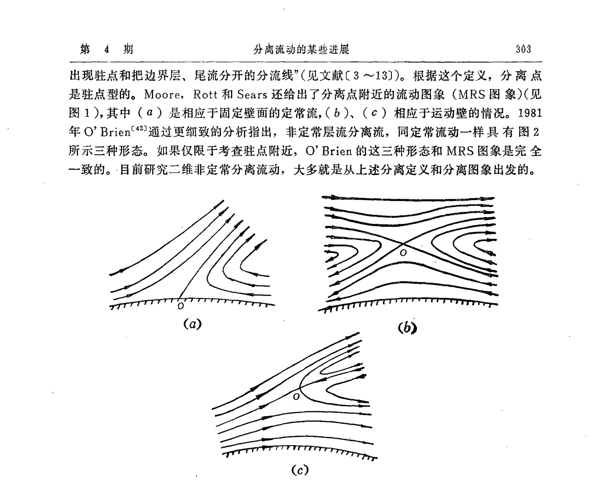

01中文摘要
综述判定二维非定常和三维定常粘性流动分离的条件，以及分离点、分离线附近流动性的研究概况，并介绍作者本人的工作。内容涉及经典壁面剪切为零判据在非定常与三维流动中的推广、分离线的拓扑结构、分离点邻域的局部渐近行为，以及分离与旋涡形成的联系。
原始摘要（英文/原文）
本文综述了判定二维非定常和三维定常粘性流动分离的条件及分离点、线附近流动性状的研究概况,介绍了作者的工作。
02阅读说明
中文综述（《航空学报》，1985，12页），作者张涵信。材料为扫描件 OCR，正文、公式与参考文献大量乱码；已用原 PDF 第3–8页（刊页303–308）核对式(2.1)–(2.6)、式(3.1)–(3.2)及拓扑规则。抓图清单仅1条（fig01_p3.png，标注“图6/第3页”），与正文第3页图1（MRS图象）不一致：按指令保留清单原 file/n/page 值，并在图注中说明。§4 的转换式(4.1)之后及式(2.6)中 A1–D1 的完整偏导定义字迹不清，凡无法确认处均注明“受限于材料，无法确认”。 文章类型：期刊
03一句话核心与三句话摘要
综述二维非定常与三维定常分离判据，提出统一判据并厘清分离线拓扑与起始终结。
- 文章系统评述 MRS、零涡、Goldstein 奇点、Fansler–Danberg 奇异型参数与王国璋比拟五类分离判据，指出它们各有适用条件、都不是通用判据。 原文明确
- 作者从 Moore 的分离定义出发，用微分方程奇点理论给出由判别式 F 与二阶偏导组合 q、R 构成的分离条件，并证明 MRS 与零涡判据是该条件在特定零 u 线数目下的特例。 AI概括
- 对三维定常流，NS 方程下分离线是一条极限流线、周围极限流线以它为收拢渐近线；边界层方程下分离线退化为极限流线的包络，差异源于边界层近似在分离线处引入的奇性。 原文明确
04核心内容清单
| 要点 | 类型 | 重要性 | 原文依据 | 属性 |
|---|---|---|---|---|
| 综述范围锁定二维非定常与三维定常不可压缩粘性分离，核心问题是分离判据的普遍性及分离点/线邻域的流动性状。 | 研究定位 | B | 摘要；§1，刊页301–302 | 原文明确 |
| MRS 判据：在分离点 u0=0 且 (∂u/∂y)0=0；其流动图象按零 u 线条数分为三种形态。 | 已有判据 | A | 式(2.1)；§2，刊页303，图1 | 原文明确 |
| 零涡判据：在分离点 u0=0 且 Ω0=(∂v/∂x−∂u/∂y)0=0；当过分离点流线不正交时该判据不成立。 | 已有判据 | A | 式(2.2)；§2，刊页303–305 | 原文明确 |
| Goldstein 奇点分离判据：边界层方程解在分离点出现奇性，表现为 (∂τ/∂y)0→∞。 | 已有判据 | A | 式(2.3)；§2，刊页304 | 原文明确 |
| Fansler–Danberg 奇异型参数判据：以形状参数梯度 (dH/dK)0→∞ 作为分离条件，仅适用于某些边界层。 | 已有判据 | B | 式(2.4)；§2，刊页304 | 原文明确 |
| 作者条件1：在分离点 u0=0、v0=0 且 F=(∂u/∂x)0²+(∂v/∂x)0(∂u/∂y)0>0；F<0 则不是分离点。 | 作者判据 | A | 式(2.5)；§2，刊页304 | 原文明确 |
| 作者条件2：进一步用二阶偏导组合 q=(C1/D1)²−(3/2)(B1/D1)(C1/D1)−(1/2)(A1/D1) 与 R=−(C1/D1)³+(B1/D1)(C1/D1)≤0 判定分离；A1–D1 为 u 在 o 点二阶偏导的组合，具体形式受限于扫描字迹无法确认。 | 作者判据 | A | 式(2.6)及刊页305的 q、R 定义；§2 | AI概括 |
| 按零 u 线条数分类可统一判据关系：一条零 u 线时 MRS/零涡为充分非必要条件；两条零 u 线时为必要非充分条件，因此两者都不是通用判据。 | 判据关系 | A | 七条结论第(1)(3)(7)条；§2，刊页305–306 | 原文明确 |
| 边界层方程下，两条零 u 线且 MRS 成立对应 Goldstein 粘性奇点；一条零 u 线且 MRS 成立对应无粘性奇点，故奇点分离判据也不是通用的。 | 奇点性质 | A | 七条结论第(4)(6)条；§2，刊页305–306 | 原文明确 |
| 三维定常分离/再附条件：分离线 (∂u/∂z)0=0、(∂²u/∂x∂z)0<0；再附线 (∂u/∂z)0=0、(∂²u/∂x∂z)0>0，对 NS 方程与边界层方程均成立。 | 作者判据 | A | 式(3.1)(3.2)；§3，刊页306 | 原文明确 |
| NS 方程下分离线是一条极限流线，周围极限流线向它收拢并以它为渐近线；边界层方程下分离线是极限流线的包络，再附线在 NS 方程下则是向外散开的渐近线。 | 分离线拓扑 | A | §3结论(1)(2)(3)；刊页307，图4 | 原文明确 |
| 分离线起点若为奇点只能是鞍型，终点若为奇点只能是结点或焦点；再附线起点为结点/焦点、终点为鞍型。物面奇点分布满足三条拓扑规则。 | 起始终结与拓扑 | A | §3末；刊页307–308，图5、图6 | 原文明确 |
05引言：研究问题与领域缺口
研究问题是二维非定常与三维定常粘性流动中“分离何时起始、分离点/线附近流动性状如何”。作者先回顾 Moore–Rott–Sears（MRS）以来的研究：MRS 判据与零涡判据在下游运动壁的多数定常流中成立，但在上游运动壁的多数流动中不成立；Goldstein 奇点判据、Fansler–Danberg 奇异型参数判据只适用于某些边界层；王国璋比拟判据又依赖尚在讨论的三维定常判据。三维方面，分离线究竟是壁面极限流线的包络还是一条极限流线及其周围极限流线的渐近线，长期存在分歧；分离线如何起始、终结，奇点如何分布，也缺少统一认识。由此作者提出：检验 MRS 与奇点判据是否普遍且等同、奇点性质是粘性还是无粘性、有限时刻后奇点是否出现、三维分离条件是什么、二维非定常与三维定常判据能否互相转换。
06流动条件与几何构型
| 项目 | 数值/描述 | 依据 | 备注 |
|---|---|---|---|
| 流动介质与可压缩性 | 不可压缩粘性流动（作者判据的推导前提） | §2，刊页304 | 综述本身未讨论可压缩修正 |
| 二维非定常分析范围 | 仅限分离点邻域 | §5，刊页310 | 原文明确说明不覆盖大范围分离区 |
| 三维定常分析范围 | 仅限壁面分离线附近 | §5，刊页310 | 未讨论空间分离流场整体结构 |
| 分离定义 | 在与分离点一起运动的坐标系内出现驻点，并存在把边界层与尾流分开的分流线 | §2开头，刊页302–303 | Moore 的定义，作者以其为出发点 |
| 二维坐标系 | x 沿物面方向、y 垂直物面方向，并随分离点一起运动 | §2，刊页303 | 式(2.1)–(2.6)均在此局部坐标系中 |
| 三维坐标系 | x、y、z 为正交曲线坐标系，y 轴沿分离线，z 轴为物面法向 | §3，刊页306 | u 为分离线法向（x 方向）的速度分量 |
| 方程适用范围 | 式(3.1)(3.2)对 NS 方程和边界层方程所描述的流动都成立 | §3，刊页306 | |
| 牛顿流体假定 | 极限流线与摩擦应力线等同，故三维结论对摩擦应力线也适用 | §3，刊页307 | 非牛顿流体需另行讨论，文中未展开 |
| 比拟转换条件 | 压力仅为 x 的函数（∂p/∂y=0），且 Δy→0、Re 有限 | §4，刊页309–310 | 王国璋变换成立的前提 |
| 壁面运动方向 | 下游运动壁与上游运动壁分开讨论，二者零 u 线数目不同 | §2，刊页305–306 | 不能把两类壁面运动合并成一条结论 |
07核心现象与关键参数
| 参数 | 定义 | 数值 | 关系/说明 | 依据 |
|---|---|---|---|---|
| 判别式 F | 分离点处流向速度梯度与横向速度梯度的二次组合 | F=(∂u/∂x)0²+(∂v/∂x)0(∂u/∂y)0；分离要求 F>0 | F<0 时该点不是分离点；F=0 为临界情形 | 式(2.5)，刊页304 |
| 二阶偏导组合 q | 由 u 在 o 点的二阶偏导组合 A1、B1、C1、D1 构成的无量纲量 | q=(C1/D1)²−(3/2)(B1/D1)(C1/D1)−(1/2)(A1/D1) | 与 R 一起构成条件2的不等式 | 刊页305；A1–D1 的完整定义受限于材料，无法确认 |
| 二阶偏导组合 R | 同上，u 的二阶偏导组合 | R=−(C1/D1)³+(B1/D1)(C1/D1)≤0 | 条件2要求 R≤0 | 刊页305 |
| 零 u 线条数 | 过分离点的零流向速度线（u=0）数目 | 一条或两条 | 一条对应 MRS 图象 b；两条对应 MRS 图象 a、c；决定 MRS/零涡判据是充分还是必要 | §2结论(1)，刊页305 |
| 形状因子 H | 边界层位移厚度与动量厚度之比 | Fansler–Danberg 判据取 (dH/dK)0→∞ | 用于奇异型参数判据 | 式(2.4)，刊页304；K 的定义受限于 OCR，无法确认 |
| 摩擦应力 τ | 壁面局部切应力 | Goldstein 奇点判据取 (∂τ/∂y)0→∞ | 区分粘性奇点与无粘性奇点的关键量 | 式(2.3)，刊页304 |
| 拓扑计数 ΣN、ΣS | 物面上结点/焦点总数 ΣN 与鞍点总数 ΣS | 单个单连物体表面 N−S=2；物体 Σ 与平面 P 构成单连体时，合并表面 (ΣN−ΣS)=0 | 用于检验分离线起始终结的奇点分布 | §3，刊页308 |
| 半奇点计数 ΣN′、ΣS′ | 物面轮廓线上的结点/焦点与鞍点总数（半结点、半鞍点） | 二维截面：(ΣN+½ΣN′)−(ΣS+½ΣS′)=−1；锥型流：=0 | 把拓扑规则从物面推广到截面与锥型流 | §3，刊页308 |
08方法与数据
这是一篇以理论评述为主的综述，不含新的数值算例。方法上：①按二维非定常与三维定常两条线梳理已有判据与实验/数值证据；②采用不可压缩粘性流动的微分方程奇点理论，在随分离点运动的局部坐标系中分析零 u 线与速度/摩擦应力奇点；③把作者给出的分离条件与 MRS、零涡、Goldstein、Fansler–Danberg、王国璋判据逐条比较，证明包含关系；④对三维定常流，从分离流面与物面交线的定义出发给出分离/再附条件，并用极限流线方程分析分离线邻域；⑤用拓扑学方法统计物面及截面上的结点、焦点、鞍点、半结点、半鞍点；⑥介绍王国璋把时间变量视为空间变量的比拟方法，讨论二维非定常与三维定常判据的互换。
| 项目 | 内容 | 依据 | 备注 |
|---|---|---|---|
| 文献综述与判据比较 | 按 MRS、零涡、Goldstein 奇点、Fansler–Danberg、王国璋比拟五类逐条评述，并对照实验与数值证据 | §1–§2，刊页301–306 | |
| 局部奇点分析 | 在随分离点运动的坐标系中展开速度场，用零 u 线条数与二阶偏导判别局部流线拓扑 | §2，刊页304–305 | 作者称利用微分方程奇点理论，中间代数见其先前工作，本文只给条件与结论 |
| 判据包含关系证明 | 由作者条件反推 MRS 条件与零涡条件，按一条/两条零 u 线分别讨论充分性与必要性 | §2结论，刊页305–306 | |
| 三维分离线分析 | 从分离流面与物面交线定义出发，对 NS 方程与边界层方程分别求分离线邻域的极限流线性状 | §3，刊页306–307 | |
| 拓扑分析 | 统计物面、二维截面、锥型流球面上结点/焦点与鞍点数目，给出三条拓扑恒等式 | §3，刊页307–308 | |
| 比拟转换 | 采用王国璋方法，把二维非定常流的时间变量视为空间变量，化为三维定常边界层问题，再比较两边分离条件 | §4，刊页309–310 | 式(4.1)之后的具体转换式在扫描件中字迹不清，受限于材料无法确认 |
| 算例说明 | 以直立半圆柱-平面组合体的 NS 方程解展示表面摩擦应力线与奇点分布，验证拓扑规则 | §3，刊页308–309，图6 | 仅作定性示例，未给定量网格或收敛信息 |
09核心推导与公式
以 Moore 的分离定义（随分离点运动坐标系中的驻点与分流线）为出发点，把“是否分离”化为局部速度场/摩擦应力场的奇点分类问题：先按过分离点的零 u 线条数分型，再用一阶与二阶偏导组合给出判别式；三维定常情形则把分离线视为极限流线方程的一条特殊积分曲线，用其邻域极限流线的收拢/发散方式与奇点类型判定分离与再附。
关键假设
- 流动为不可压缩粘性流动（作者判据的推导范围）
- 二维非定常情形只考察分离点邻域，三维定常情形只考察壁面分离线邻域
- 分离点随局部坐标系一起运动，可在该坐标系中把非定常问题局部定常化
- 三维分离条件对 NS 方程与边界层方程均适用
- 牛顿流体下极限流线与摩擦应力线等同
- §4 的比拟转换要求压力仅为 x 的函数，并取 Δy→0、Re 有限
推导过程
MRS 把分离点定义为随分离点运动坐标系中的驻点，并要求该点流向速度及其法向梯度同时为零。按零 u 线条数，分离点邻域有三种图象：固定壁定常流对应一条零 u 线，运动壁情形可对应两条零 u 线。
零涡判据要求分离点速度为零且涡量零，即速度场在该点无旋。作者随后指出：当过分离点的流线不正交时，零涡条件并不满足，因此该判据只在特定流动中成立。
Goldstein 判据把分离理解为边界层方程解在分离点出现奇性，以摩擦应力法向梯度趋于无穷为标志；Fansler–Danberg 判据则用形状因子对另一参数的梯度趋于无穷来刻画同一奇性。两者都只适用于某些边界层流动，不是普遍判据。
作者由 Moore 定义出发，得到第一个分离条件：分离点速度为零，且由流向与横向速度梯度组成的判别式 F 大于零。若 F 小于零，则该点不是分离点。这一步把 MRS 的“两个梯度同时为零”推广为更一般的局部速度场条件。
当 F=0 时需用更高阶信息。作者给出条件2：在 o 点 u0=v0=0，并用 u 的二阶偏导组合 A1–D1 构造 q 与 R；分离要求 R≤0，q 参与同一不等式。受扫描字迹限制，A1–D1 的完整偏导表达式与条件2的最终不等式形式无法确认，本文只保留可辨认的 q、R 定义。
把条件1、2与 MRS、零涡、Goldstein 判据逐条对照，可得：过分离点或有一条零 u 线、或有两条零 u 线；MRS 条件成立时条件1必满足，故 MRS 包含于作者条件；零涡判据同样被包含；一条零 u 线时 MRS/零涡为充分非必要，两条时为必要非充分，故二者不通用；边界层方程下两条零 u 线对应粘性 Goldstein 奇点，一条零 u 线对应无粘性奇点。
在 y 轴沿分离线、z 轴为物面法向的正交曲线坐标系中，分离线上分离线法向速度 u 满足：u=0、且 u 对 z 的一阶导数为零、混合二阶偏导小于零；再附线把不等号反过来。该条件对 NS 方程与边界层方程都成立，是二维定常判据的推广。
由三维条件可证：NS 方程下分离线本身是一条极限流线，其两侧极限流线向它收拢并以它为渐近线；边界层方程下分离线是极限流线的包络；NS 方程下再附线也是极限流线，周围极限流线以它为渐近线并向外散开。两种图象的差别来自边界层近似在分离线处产生奇性，使极限流线形状畸变。
分离线起点若为奇点只能是鞍型，终点若为奇点只能是结点或焦点；再附线相反。由此可用拓扑计数约束奇点分布：单个单连物体表面上结点/焦点总数比鞍点总数多 2；当物体 Σ 与平面 P 构成单连体时，合并表面满足 ΣN−ΣS=0；二维截面因轮廓线上的半奇点使差值变为 −1；锥型流球面上差值为 0。
把二维非定常流的时间变量视为空间变量，可构造一种三维定常边界层流动；在该变换下，二维非定常的分离条件与三维定常的分离条件在 Δy→0 时一致，因而两套判据可以互相转换。受扫描件字迹限制，式(4.1)之后的具体转换式与系数无法确认。
适用边界：本文是综述，未给出新的数值实验或定量的适用雷诺数范围；作者判据的中间代数引至其先前工作，本文只列条件与结论；扫描件使式(2.6)的 A1–D1 定义与 §4 转换式无法完整核对；讨论限于不可压缩、分离点/线邻域，未涉及可压缩效应、湍流、大范围分离区与涡运动。
10结果：主要发现与关键证据
主要结果分三部分。二维非定常：作者条件1为在分离点 u0=0、v0=0 且 F=(∂u/∂x)0²+(∂v/∂x)0(∂u/∂y)0>0；条件2进一步要求二阶偏导组合 q、R 满足特定不等式（R≤0）。由条件可导出七条结论：过分离点或有一条零 u 线（对应 MRS 图象 b），或有两条零 u 线（对应 MRS 图象 a、c）；MRS 条件成立时条件1必满足，故 MRS 判据包含于作者条件；零涡判据同样被包含；一条零 u 线时 MRS/零涡是充分非必要条件，两条零 u 线时是必要非充分条件，故二者都不是通用判据。边界层方程下，两条零 u 线且 MRS 成立时分离点为 Goldstein 粘性奇点；一条零 u 线时出现无粘性奇点。三维定常：分离线上 (∂u/∂z)0=0、(∂²u/∂x∂z)0<0，再附线上 (∂u/∂z)0=0、(∂²u/∂x∂z)0>0；NS 方程下分离线是一条极限流线、周围极限流线向它收拢并以它为渐近线，边界层方程下分离线是极限流线的包络；分离线起点若为奇点必为鞍型，终点若为奇点必为结点或焦点，再附线相反；并给出单连体、二维截面、锥型流三条拓扑规则。
| 发现 | 证据 | 证据类型 | 强度 | 位置 | 属性 |
|---|---|---|---|---|---|
| MRS、零涡、Goldstein 奇点、Fansler–Danberg 与王国璋比拟判据各有适用条件，没有一个是通用判据。 | §2 对五类判据逐条评述，并指出上游运动壁多数流动不满足 MRS；零涡判据在流线不正交时失效；奇点与奇异型参数判据只适用于某些边界层。 | 判据评述 | 强 | §2，刊页303–306 | 原文明确 |
| 作者条件1以 F>0 判定分离；F<0 时该点不是分离点。 | 式(2.5)及随后的文字说明。 | 理论判据 | 强 | 式(2.5)，刊页304 | 原文明确 |
| MRS 条件与零涡条件都被作者条件包含；其充分/必要性取决于过分离点的零 u 线条数。 | 七条结论第(2)(3)(7)条：一条零 u 线时二者充分非必要，两条时必要非充分。 | 判据关系 | 强 | §2结论，刊页305–306 | 原文明确 |
| 边界层方程下，两条零 u 线且 MRS 成立对应 Goldstein 粘性奇点；一条零 u 线且 MRS 成立对应无粘性奇点。 | 七条结论第(4)(6)条及 §2 末段对粘性/无粘性奇点的区分。 | 奇点性质 | 强 | §2，刊页305–306 | 原文明确 |
| 三维定常分离线在 NS 方程下是一条极限流线，周围极限流线以它为收拢渐近线；在边界层方程下则是极限流线的包络。 | §3结论(1)(2)与图4(a)(b)(c)的极限流线示意。 | 分离线拓扑 | 强 | §3，刊页307，图4 | 原文明确 |
| 分离线起点若为奇点只能是鞍型，终点若为奇点只能是结点或焦点；再附线恰好相反。 | §3 对分离线起始终结的奇点分析；图5 给出正常点起始与奇点起始两种形态。 | 起始终结 | 强 | §3，刊页307–308，图5 | 原文明确 |
| 单连体表面、二维截面与锥型流球面上的奇点数目分别满足三条拓扑规则，半圆柱-平面组合体的 NS 解可作为示例。 | §3 给出的三条拓扑恒等式；图6 的表面摩擦应力线与奇点分布。 | 拓扑规则 | 中 | §3，刊页308–309，图6 | 原文明确 |
| 在王国璋变换意义下，二维非定常与三维定常的分离条件可以互相转换。 | §4 由变换后的三维定常条件反推二维非定常条件，指出 Δy→0 时两者一致。 | 判据统一 | 中 | §4，刊页309–310 | AI概括 |
11机制解释与论证链
作者把分离的局部机制归结为速度场（或摩擦应力场）在物面处的奇点：当流向速度与法向梯度以特定方式同时退化时，局部流线出现驻点/分流，积分曲线在奇点处改变拓扑，形成分离或再附。零 u 线的条数决定了奇点的粘性或无粘性，也决定了 MRS/零涡条件是否必要；三维情形则是极限流线方程的一条特殊积分曲线（分离线）与周围积分曲线的渐近关系，边界层近似把渐近线畸变为包络。拓扑规则则约束这些奇点在物面、截面和锥型流球面上的数量与类型。
12讨论：结论、贡献与局限
作者用“零 u 线条数”统一解释了长期争议：下游运动壁的定常流多为两条零 u 线，MRS 条件必要，所以数值上常看到 MRS 成立；上游运动壁多为一条零 u 线，MRS 条件不必要，所以常看到 MRS 失效。三维分离线的“包络说”与“渐近线说”也不是谁对谁错，而是方程层次不同：边界层近似在分离线处产生奇性，使本为收拢渐近线的分离线畸变为包络；求解 NS 方程即恢复渐近线图象。作者同时指出，现有结果只覆盖分离点/线邻域，未涉及大范围分离流场空间结构，也尚未厘清分离流与涡运动的关系；判据的通用性还需针对具体流动做数值实验。
作者结论
作者主张：分离判据不能脱离局部流场的奇点结构来谈。二维非定常分离可由 F>0（必要时加 q、R 条件）判定，MRS 与零涡判据只是其在特定零 u 线数目下的特例；边界层方程下的粘性/无粘性奇点之分解释了为什么同一判据在不同壁面运动方向上时灵时不灵。三维定常分离线应理解为极限流线方程的特殊积分曲线：NS 方程下是收拢渐近线，边界层方程下是包络；分离线起始终结受奇点类型与拓扑规则约束。作者同时承认，这些结果只覆盖分离点/线邻域，通用性仍需数值实验检验，大范围分离流场结构与涡运动联系是后续方向。
局限与未解决问题
①综述性质，无新算例，未给出判据的定量适用雷诺数/马赫数范围；②仅讨论不可压缩粘性流动，未处理可压缩、热非平衡与湍流；③二维非定常仅限分离点邻域，三维定常仅限壁面分离线邻域；④作者判据的中间推导引至其先前工作，本文只给条件与结论；⑤扫描件 OCR 严重退化，式(2.6)的 A1–D1 定义、§4 转换式及部分参考文献无法核对；⑥抓图清单仅1张且图号与正文不一致，无法据图做定量核验。
13对高速流动与工程的意义
这篇文章把此前彼此分散的 MRS、零涡、Goldstein、Fansler–Danberg 与比拟判据放进同一个“零 u 线条数—奇点类型”框架，明确指出“哪个判据在什么条件下成立”，对20世纪80年代分离流判据之争给出了可操作的统一解释；三维部分关于 NS 渐近线与边界层包络的区分，直接回应了当时分离线性质的核心分歧，并为后续拓扑分析与分离线起始终结研究提供了判据和恒等式。对今天使用 CFD 判定分离的工作，其价值在于提醒：分离判据与方程层次、壁面运动方向、局部奇点类型强相关，不能把某一判据无条件外推。
14核心图件

15可引用原文素材
| 原文短句 | 可支持的观点 | 位置 | 使用建议 |
|---|---|---|---|
| “分离线是壁面极限流线的包络” | 早期包络说的代表性表述 | §1，刊页302 | 作为被后文重新审视的观点 |
| “分离线是周围极限流线的“收拢渐近线”” | 与包络说相对的另一派观点 | §1，刊页302 | 引出三维分离线性质之争 |
| “MRS判据、零涡判据不是通用的” | 全文核心判断之一 | §2结论(3)，刊页305 | 概括判据评述的落脚点 |
| “分离线是一条极限流线” | NS 方程下分离线的定性结论 | §3结论(1)，刊页307 | 区分 NS 与边界层两种图象 |
| “分离线是极限流线的包络” | 边界层方程下分离线的定性结论 | §3结论(2)，刊页307 | 解释包络说产生的原因 |
| “如果分离线的起点是奇点，那么它只可能是鞍型的” | 分离线起始的奇点类型约束 | §3，刊页307 | 支撑起始终结与拓扑分析 |
| “二维非定常流和三维定常流的分离条件……彼此是可以互相转换的” | §4 比拟转换的结论 | §4末，刊页310 | 说明两类判据的统一性 |
16最终核验
| 核验项 | 结论 |
|---|---|
| 仅基于全文 | 仅使用 bundle 文本、图注及原 PDF 第3–8页（刊页303–308）核对；未引入外部知识或教科书推导。 |
| A 级要点有依据 | A 级条目均对应正文明确给出的式(2.1)–(2.6)、(3.1)(3.2)、七条结论与三条拓扑恒等式，并标注刊页；无仅凭图件推断的 A 级结论。 |
| 属性标注 | three_sentence、core_points、findings 均逐条标注“原文明确/AI概括/AI推断”；图注为对原图注与正文图1的中文概括，属 AI概括。 |
| 覆盖范围 | bundle 644行已全文读完；PDF 核对6页（第3–8页，刊页303–308），覆盖 §2–§3 全部公式与图1–图6；§4 式(4.1)以后未能在6页限额内核对。 |
| 无编造 | 未编页码、图号、公式或数据；抓图清单仅1张，未为凑足2–4张而虚构文件名或图号；式(2.6)中 A1–D1 定义、§4 转换式、Fansler–Danberg 判据中 K 的定义均写“受限于材料，无法确认”；A1–D1 相关内容仅作概括，未补写代数。 |
需回原文确认
- 式(2.6)中 A1–D1 的完整偏导组合与条件2的最终不等式究竟是什么？
- 作者判据在可压缩、热非平衡流动中是否仍成立，需要哪些修正？
- 一条零 u 线时的“无粘性奇点”在实验或数值上如何识别，与粘性奇点的可观测差异是什么？
- 三条拓扑规则在非单连物体、粗糙壁面或存在移动接触线时如何修正？
- §4 的王国璋变换在什么雷诺数/压力梯度范围内成立，转换式(4.1)之后的具体形式为何？
- 分离线的正常点起始与奇点起始是否对应不同的全局稳定性或转捩路径？
17关联文献
依据标签、板块、构型与作者脉络自动关联，可据此追踪同一问题的前序与后续工作。
18引用格式
选择期刊风格后复制；出处保留原刊名。BibTeX 可直接用于 LaTeX。
引用格式
张涵信 1985 分离流动的某些进展. 航空学报 (4), 301–312. https://kns.cnki.net/KCMS/detail/detail.aspx?dbcode=CJFQ&dbname=CJFD8589&filename=HKXB198504000
PDF上传 PDF 并更新本页
本页缺少全文、摘要或图件时，可在浏览器本地补入 PDF。解析完全在本机完成，不上传网络；完成后会更新本页的 PDF 打开链接、原摘要、IMRaD 机器抽取、关键句与含图页面。复杂的公式语义与中文深度解读仍以原文和既有精读记录为准。